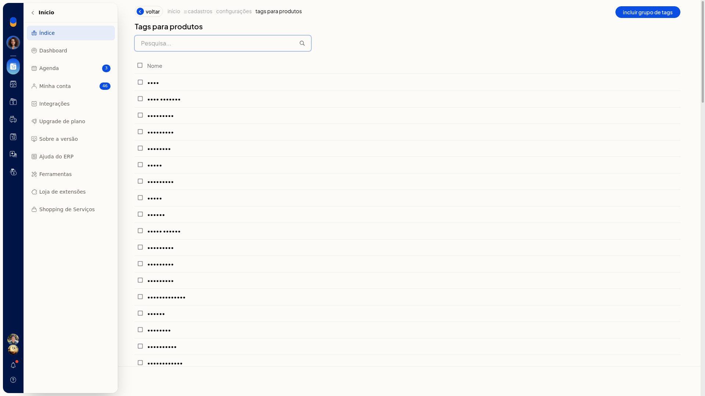
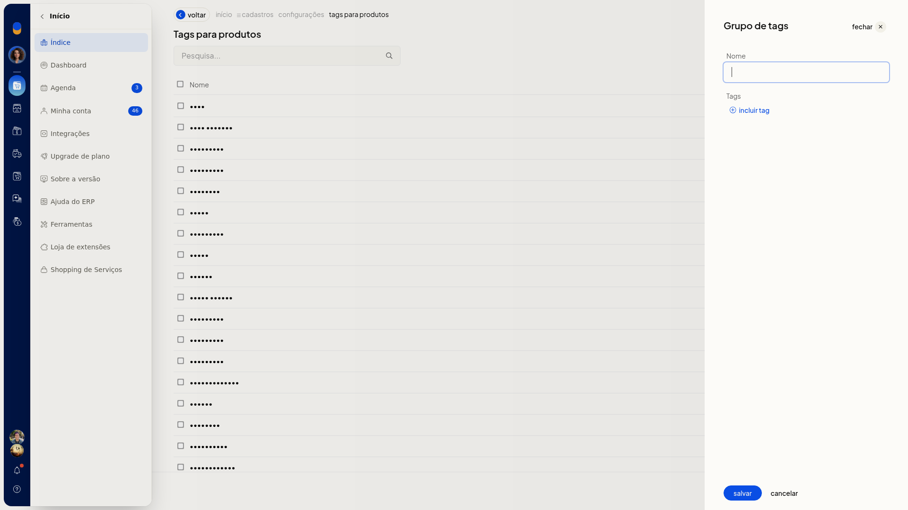
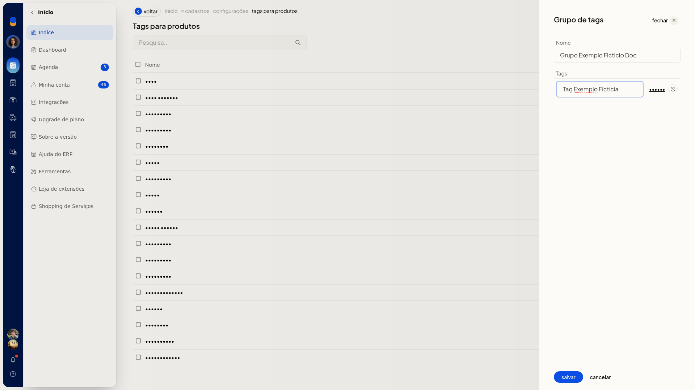
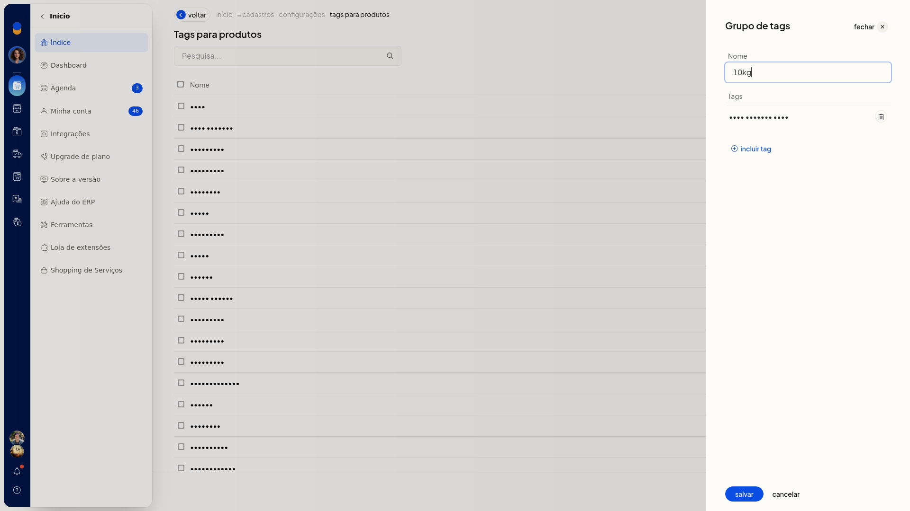

Tags de produtos
No ERP da Olist, os grupos de tags reúnem as marcações usadas no cadastro de produtos. Você consulta a lista, inclui um grupo, acrescenta tags e altera um grupo já existente.
O caminho fica em Configurações > Cadastros, em Configurações das tags e depois em Tags para produtos.
Instruções
Incluir um grupo de tags
-
Acesse Configurações > Cadastros.
-
Abra Configurações das tags e, em seguida, Tags para produtos.
-
Clique em Incluir grupo de tags.


-
Informe o nome do grupo em Nome. O campo não é obrigatório.
-
Clique em Incluir tag.
-
Informe a tag e clique em Salvar da própria tag.
-
Clique em Salvar do grupo para gravar.

Editar um grupo de tags
-
Em Tags para produtos, abra o grupo na lista.
-
Ajuste o Nome, use Incluir tag para acrescentar outra tag ou o ícone de remover para tirar uma tag já incluída.
-
Clique em Salvar.

Informações adicionais
- A lista de tags tem pesquisa e paginação.
- Cancelar no grupo de tags volta à lista de tags.